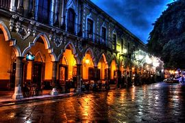
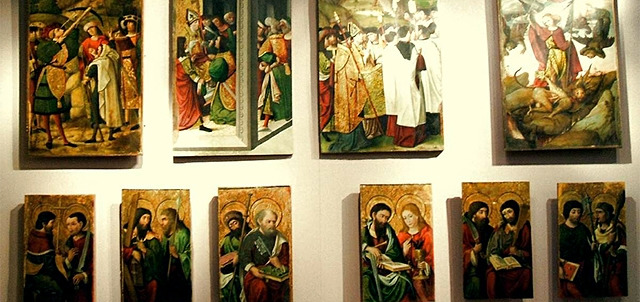
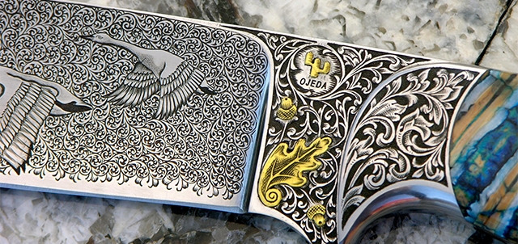
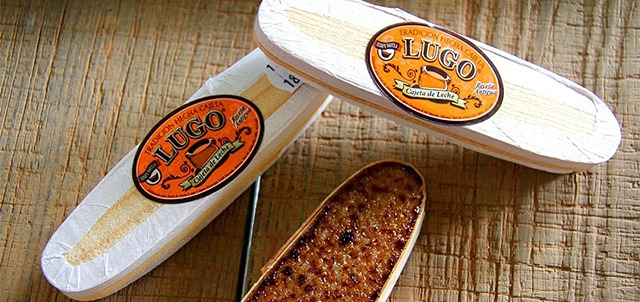

Menu de nuestros sitios web
pueblo al sur de jalisco con gran variedad de atractivos turisticos, tales como sus bellezas naturales, expresiones artisticas muy interesantes, celebraciones patronales, artesanias y postres
.jpg)
En el año de 1824, por decreto del 27 de marzo, Sayula se convierte en cabecera de uno de los 26 departamentos en que se dividió el estado de Jalisco; componiéndose los pueblos de Atoyac, Amacueca, Tepec, Usmajac, Cuyacapán y Tapalpa. En esa misma disposición se le otorgó a Sayula el título de ciudad.
Ahora en el año 2023 se le otorgo oficialmente el título de pueblo mágico, debido a los atributos simbólicos, como su arquitectura, leyendas, hechos transcendentes, que son atributos de aprovechamiento turísticos, esto ha hecho que Sayula se vulva un lugar agradable para su visita turísticas.
casa de la cultura juan rulfo
Portando el nombre en honor a este gran escritor mexicano cuyo lugar de nacimiento fue Sayula, esta Casa de la Cultura se encuentra en una vieja casona ubicada en el centro de la ciudad. El lugar es espacio para múltiples talleres, exposiciones de arte y eventos culturales, y también alberga el Museo Arqueológico y Museo de Metalistería. Como podrás ver, hay múltiples razones para que sea una visita obligada en tu visita a Sayula.
museo de arte sacro
Ubicado en el Santuario a la Virgen de Guadalupe este museo es un testimonio de la fuerte tradición religiosa del poblado ya que en él se muestran obras realmente valiosas que representan la religiosidad y fe del lugar. Incluso faltando información sobre las piezas, podrás valorar su peso artístico e histórico. También puedes ver lo que resta del santuario de 1646 aunque no puedas entrar a él.
cuchillos ojeda
Provenientes de una familia con 14 generaciones de herreros, desde 1976 Don José Ojeda Larios junto con sus hijos de 12 y 13 años le entraron al arte de hacer cuchillos de los cuales ahora podrás encontrar una amplia variedad. Desde cuchillos de cocina muy específicos, hasta navajas y algunos especiales. No te dejes engañar: estos no son cuchillos cualquiera son verdaderas obras de arte que, compres o no, deberás ir a admirar.
cajetas lugo
Desde inicios del siglo XX se comenzó con la producción de cajeta en Sayula. En esa época Don Agustín Lugo rescató la receta de su suegra y comenzó a elaborarla en 1915 vendiéndola a los pasajeros de la muy transitada ruta del tren. Ahora en manos de la tercera y cuarta generación aún puedes disfrutar de este delicioso postre en su modo tradicional o bajo en azúcar. Así que no dejes de pasar por su tienda y llevarte una buena dotación de cajeta.
Diana Moreno. Guadalajara, México Tienes que probarla mar de 2020 Definitivamente la cajeta Lugo la tienes que probar, esta deliciosa, no sé qué pleito tengan en la familia, pero se divide por “color de etiqueta” que La Roja, la naranja, la azul y quien sabe qué tanto, yo probé La Roja y esta deliciosa, sí o sí la tienes que probar
brenda fernandez. nada que ver con la que se hace en otros Estados de la República, un distintivo de Sayula, Jalisco (no Sayulita, Nayarit). Si vienes a Sayula y no comes cajeta no cuenta como visita, es un motivo para regresar y para recomendar a otros. Un souvenir de alta calidad, que te deja un buen sabor de boca.
santiago v.cuchillería fina y de superlujo con acabados de acero Damasco y con cachas exóticas, para cocina, cacería, y de adorno. Personal amable y que sin problema te enseñan su taller. Sin duda una visita obligada cuando pasas por Sayula.
alma viajera. Antes de despedirnos de Sayula, caminamos a una fábrica de cuchillos de Don José Ojeda Larios, déjenme decirles que tuve la fortuna de encontrarlo trabajando, un señor verdaderamente encantador, me dijo: "Si quieres tener éxito en la vida, haz lo que te apasiona, no importa el tamaño o el giro de tu negocio". Una mirada limpia, llena de conocimiento, me siento tan afortunada 🌟. Conocimos todo el proceso de la fabricación del cuchillo algo completamente nuevo para mí, de verdad tienen que venir. CLARO QUE LO RECOMIENDO BUEN VIAJE !!!!!!!
enlace de pagina de contenido libre
pagina de contenido libre sobre sayulaautor:Rudy Alberto Lopez Carreon
edad 24 años
correo electronico:
rudylopez11021@gmail.comreferencias
Que hacer en sayula: Los 4 mejores lugares turísticos: Zonaturistica (no date) Zonaturistica.com - Aquí empieza tu viaje. Available at: https://www.zonaturistica.com/que-hacer/jalisco/sayula (Accessed: 23 August 2023).
Kayak. Available at: https://www.kayak.com.mx/hotels/Sayula-c12856/2023-08-30/2023-08-31/2adults?sort=rank_a (Accessed: 23 August 2023).
jalisco, A. (2017) Los 7 Atractivos Turísticos de Sayula, Unión Jalisco. Available at: https://www.unionjalisco.mx/2017/07/08/los-7-atractivos-turisticos-de-sayula/ (Accessed: 23 August 2023).
Sayula Jalisco (no date) Ir a la página de inicio. Available at: https://www.jalisco.gob.mx/es/jalisco/municipios/sayula (Accessed: 23 August 2023).